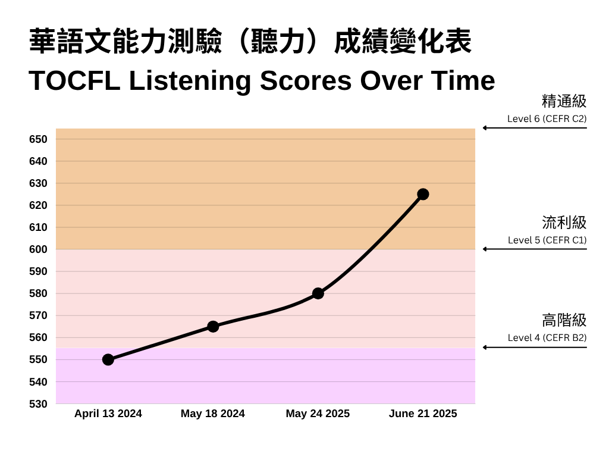
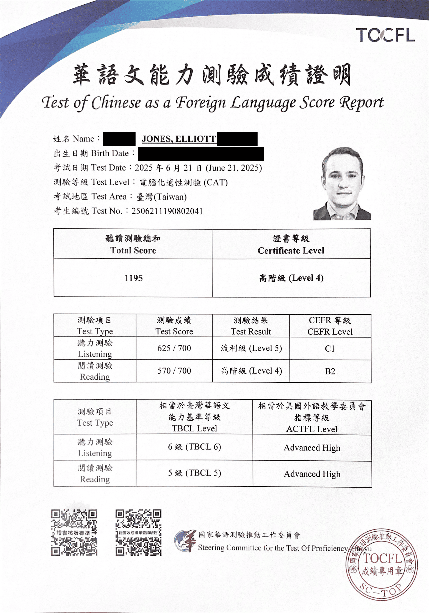

Elliott Jones
Technical Writer


Close to a decade in Taiwan and mainland China. Near-native level Mandarin Chinese fluency. Have worked for the British government in Shanghai and for many of Taiwan’s top hardware and software companies.
I Passed TOCFL Listening Level 5 (Chinese CEFR C1)
Posted July 18, 2025 by Elliott Jones
Late last month I took the TOCFL (Test of Chinese as a Foreign Language) Listening & Reading exam for the fifth time. Very happy to say I finally got Level 5/CEFR C1 (equiv. to HSK 7) on the exam's listening section.
In the month leading up to the exam, I had spent most of my time focusing on reading practice, and learning new vocabulary I discovered through reading, so I was pleasantly surprised when I got Level 5 for listening with a score of 625/700, a 45 point increase on my last attempt. Even more surprising was that my reading score went down, resulting in just a baseline Level 4, dissapointing given my recent efforts.
I think ultimately, my listening ability has been at least a low Level 5 for over a year, but various elements stopped me from getting it on the actual exam, the biggest of which is my memory. It takes genuine skill to be able to recall various pieces of information from a 2-3 minute audio clip, but the TOCFL, especially at the higher levels, requires it. In each of the five times I’ve taken the exam, I’ve encountered exam items where I’ve understood the entirety of the audio clip, but then I see the question, and I simply can’t remember some particular detail that is crucial to answering correctly. However, each time I do the exam, I am getting better at remembering, and more importantly, taking meaningful notes, so I guess that the reason my score has been improving over time, and I have now finally got Level 5 listening, is because I have improved my exam taking skills, rather than my actual listening ability. I also feel strongly that luck plays a big part in the final score, because everyone has topics they are more comfortable with, and sometimes you are lucky enough to get questions about those topics, other times, not so much.
Nevertheless, I now have Level 5 for listening, and it wasn’t even a low Level 5, it was half the way there to Level 6 (CEFR C2). It’s a shame I didn’t also get Level 5 for reading, since I have been improving my reading so much in the last few months, but I will keep trying. Below is how my score has changed over time:
{kind=link}

According to TOCFL, Level 5 listening represents the following ability:
“Can understand enough to follow extended speech on abstract and complex topics outside one’s own field, even when the presentation is not clearly structured and when relationships are only implied and not signaled explicitly, though he/she may need to confirm occasional details, especially if the accent is unfamiliar.”
Score Report
Yesterday I received score report in the mail, and for the first time I have CEFR C1 on an official document!
{kind=link}

Liked This Article?
Read My Last Article
My Best TOCFL Score Yet
Last month I took the TOCFL (Test of Chinese as a Foreign Language) Listening & Reading exam for the fourth time. Unlike my previous attempt, there were no malfunctions in the exam software this time.